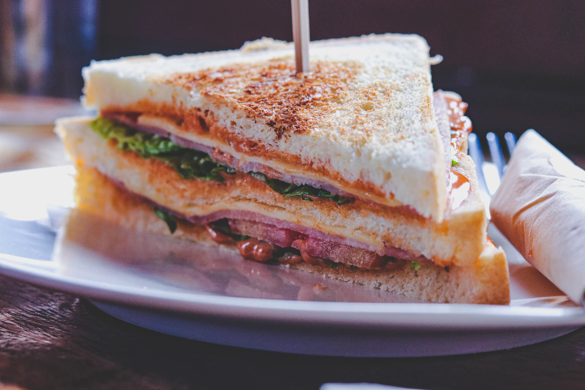
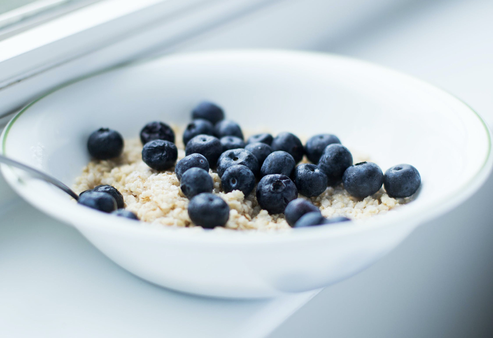
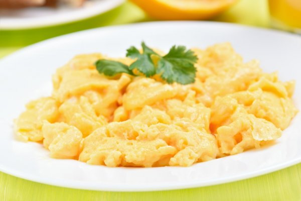

Club sandwich
20-25 Minutes
Easy
This layered sandwich, a favourite of gastro-pubs across the country, makes a tasty meal for one.
A combination of crispy toasted bread and savory, flavorful fillings makes for an easy to grab comfort food.
Instruction
- Heat grill to High and cook the bacon, turning halfway through, until crisp. Toast the bread and spread one slice with the mayo.
- Layer on the egg, tomato and bacon, then top with another slice of bread. Add the chicken or turkey, bacon, then lettuce. Finish with the final slice of bread and cut into quarters. Secure with cocktail sticks and serve with crisps, if you like.
Ingredients
Amount |
Ingredients |
|---|---|
| 4 strips | streaky bacon |
| 3 slices | white bread |
| 1 tbsp | mayonnaise |
| 1 | sliced hard-boiled egg |
| 1 | tomato |
| few | chicken/turkey slices |
| handful | salad leaves |
| handful | chips, fries or onion rings if you like |

Blueberry Oatmeal
15 Minutes
Easy
Blueberry Cinnamon Oatmeal is healthy, hearty, and so easy to make! This simple homemade oatmeal comes together on the stove top in just a few minutes and can be made with fresh or frozen blueberries.
Instruction
-
In a medium saucepan, melt the butter over medium high heat. Add the blueberries, brown sugar, and sprinkle in the spices and salt. Cook for 2-3 minutes until the blueberries are softened.
The blueberries can be added now or after the cooking process based on preference. - Pour in the water, turn the heat up to high, and bring to a low boil. Add the oats and reduce the heat to medium/medium high. Cook, stirring occasionally for 3-5 more minutes.
- Continue cooking until most of the liquid is absorbed. Serve with milk or cream if desired.
Ingredients
Amount |
Ingredients |
|---|---|
| 1/2 tablespoon | unsalted butter |
| 1 1/2 cups | brown sugar |
| 1 teaspoon | cinnamon |
| 1/4 teaspoon | ground ginger |
| 1/4 teaspoon | ground nutmeg |
| 1 pinch | salt |
| 2 cups | water |
| 1 cup | dry oats (whole grain) |

French scrambled eggs
25 Minutes
Advanced
These sublime scrambled eggs will renew your love for this morning classic.
Instruction
- Crack 6 cold eggs into a deep saucepan.
- Add the butter. For smaller batches, use a 2-to-1 eggs-to-butter ratio.
- Put the pan on high heat.
- Stir continuously with a rubber spatula—don't whisk—making sure to scrape the bottom of the pan.
- After 30 seconds, take the pan off the heat. Keep stirring. After about 10 seconds, put back on the heat. Repeat for 3 minutes.
- In the last minute, season the eggs lightly. For extra creamy texture, stir in 1 tsp of crème fraîche.
- Plate and garnish with fragrant fresh herbs like Chives or Parsley.
Ingredients
Amount |
Ingredients |
|---|---|
| 6 | large egg |
| 1 tsp | crème fraîche |
| 1:2 ratio | butter : eggs by volume |
| handful | fresh herbs |